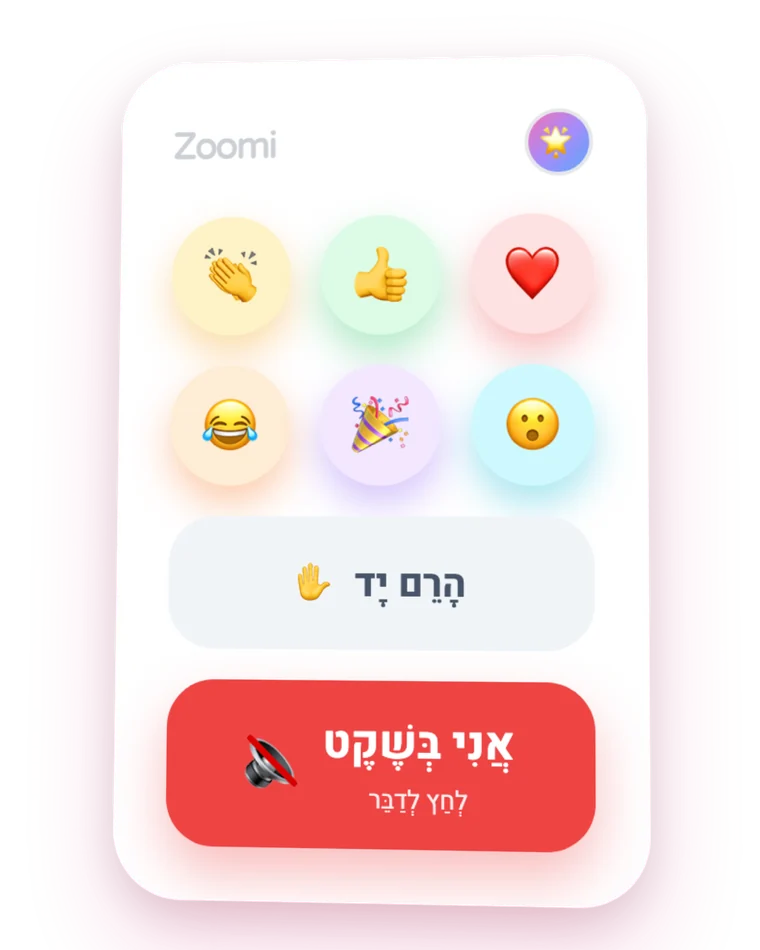
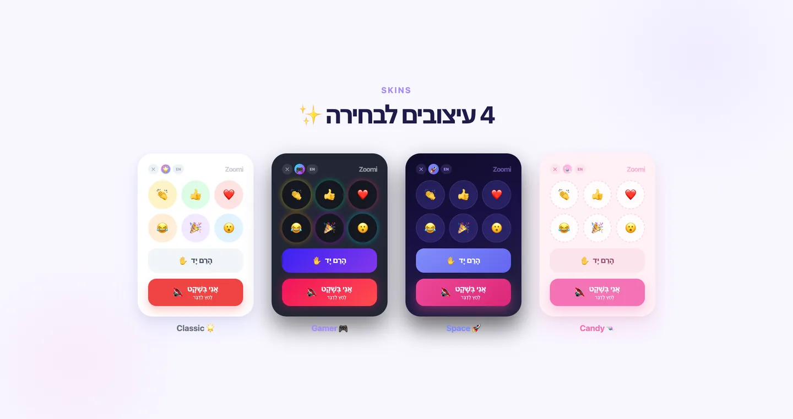
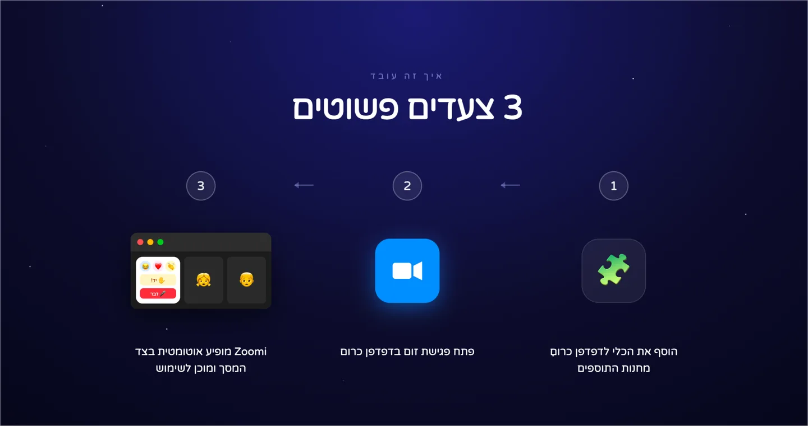
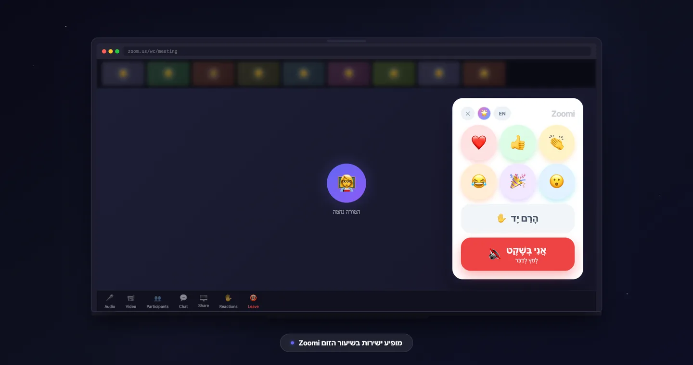

Kid-friendly Zoom controls
My son could not find the mute button in his Zoom class. Zoom is drawn for adults in meetings, not for seven year olds in lessons, so I built an overlay that puts the four controls a child actually needs at a size they can hit, in a skin they pick themselves.

What annoyed me
Watching a child hunt a grey toolbar for the one control that mattered, while the lesson carried on without him.
What I decided
The overlay asks for zero Chrome permissions and its host access stops at zoom.us meeting URLs. When the user is seven, permissions are the whole safety story.
What I built
A Manifest V3 content script over the Zoom web client: reactions, hand raise and mute, mapped to the real controls underneath and sized for small hands.
Scope
Four controls, nothing elseReactions, hand raise and mute, at a size a child can hit
Zero Chrome permissionsHost access scoped to zoom.us meeting URLs only
Four skins, chosen by the kidClassic, Gamer, Space and Candy, remembered between calls
Five languages, Hebrew includedLive at v1.1.0


